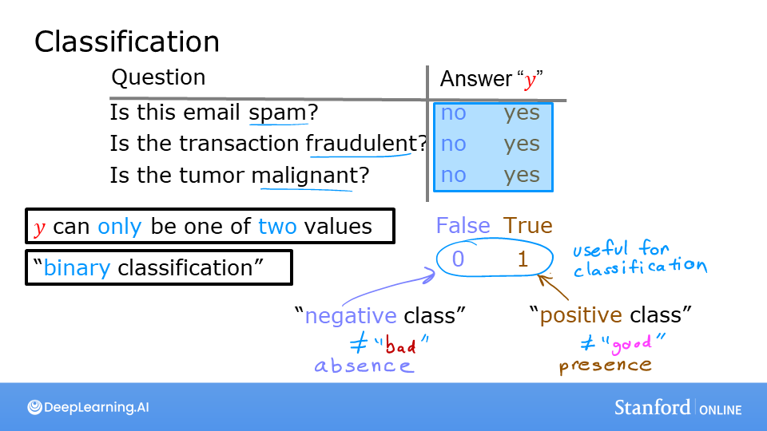

you’ll get to take a look at what happens when you try to use linear regression for classification on categorical data. You can see an interactive plot that attempts to classify between two categories. And you may notice that this doesn’t work very well, which is okay, because that motivates the need for a different model to do classification tasks.
This is my learning experience of data science through DeepLearning.AI. These repository contributions are part of my learning journey through my graduate program masters of applied data sciences (MADS) at University Of Michigan, DeepLearning.AI, Coursera & DataCamp. You can find my similar articles & more stories at my medium & LinkedIn profile. I am available at kaggle & github blogs & github repos. Thank you for your motivation, support & valuable feedback.
These include projects, coursework & notebook which I learned through my data science journey. They are created for reproducible & future reference purpose only. All source code, slides or screenshot are intellectual property of respective content authors. If you find these contents beneficial, kindly consider learning subscription from DeepLearning.AI Subscription, Coursera, DataCamp
Optional Lab: Classification
In this lab, you will contrast regression and classification.
Code
!pip install ipympl
Collecting ipympl
Downloading ipympl-0.9.3-py2.py3-none-any.whl (511 kB)
━━━━━━━━━━━━━━━━━━━━━━━━━━━━━━━━━━━━━━━ 511.6/511.6 kB 1.4 MB/s eta 0:00:00a 0:00:01
Requirement already satisfied: pillow in /Users/kakamana/opt/anaconda3/lib/python3.9/site-packages (from ipympl) (9.4.0)
Requirement already satisfied: traitlets<6 in /Users/kakamana/opt/anaconda3/lib/python3.9/site-packages (from ipympl) (5.7.1)
Requirement already satisfied: matplotlib<4,>=3.4.0 in /Users/kakamana/opt/anaconda3/lib/python3.9/site-packages (from ipympl) (3.7.1)
Requirement already satisfied: ipywidgets<9,>=7.6.0 in /Users/kakamana/opt/anaconda3/lib/python3.9/site-packages (from ipympl) (8.0.4)
Requirement already satisfied: ipython-genutils in /Users/kakamana/opt/anaconda3/lib/python3.9/site-packages (from ipympl) (0.2.0)
Requirement already satisfied: ipython<9 in /Users/kakamana/opt/anaconda3/lib/python3.9/site-packages (from ipympl) (8.12.0)
Requirement already satisfied: numpy in /Users/kakamana/opt/anaconda3/lib/python3.9/site-packages (from ipympl) (1.24.2)
Requirement already satisfied: jedi>=0.16 in /Users/kakamana/opt/anaconda3/lib/python3.9/site-packages (from ipython<9->ipympl) (0.18.1)
Requirement already satisfied: decorator in /Users/kakamana/opt/anaconda3/lib/python3.9/site-packages (from ipython<9->ipympl) (5.1.1)
Requirement already satisfied: typing-extensions in /Users/kakamana/opt/anaconda3/lib/python3.9/site-packages (from ipython<9->ipympl) (4.4.0)
Requirement already satisfied: pickleshare in /Users/kakamana/opt/anaconda3/lib/python3.9/site-packages (from ipython<9->ipympl) (0.7.5)
Requirement already satisfied: appnope in /Users/kakamana/opt/anaconda3/lib/python3.9/site-packages (from ipython<9->ipympl) (0.1.2)
Requirement already satisfied: pygments>=2.4.0 in /Users/kakamana/opt/anaconda3/lib/python3.9/site-packages (from ipython<9->ipympl) (2.11.2)
Requirement already satisfied: pexpect>4.3 in /Users/kakamana/opt/anaconda3/lib/python3.9/site-packages (from ipython<9->ipympl) (4.8.0)
Requirement already satisfied: matplotlib-inline in /Users/kakamana/opt/anaconda3/lib/python3.9/site-packages (from ipython<9->ipympl) (0.1.6)
Requirement already satisfied: backcall in /Users/kakamana/opt/anaconda3/lib/python3.9/site-packages (from ipython<9->ipympl) (0.2.0)
Requirement already satisfied: stack-data in /Users/kakamana/opt/anaconda3/lib/python3.9/site-packages (from ipython<9->ipympl) (0.2.0)
Requirement already satisfied: prompt-toolkit!=3.0.37,<3.1.0,>=3.0.30 in /Users/kakamana/opt/anaconda3/lib/python3.9/site-packages (from ipython<9->ipympl) (3.0.36)
Requirement already satisfied: ipykernel>=4.5.1 in /Users/kakamana/opt/anaconda3/lib/python3.9/site-packages (from ipywidgets<9,>=7.6.0->ipympl) (6.19.2)
Requirement already satisfied: widgetsnbextension~=4.0 in /Users/kakamana/opt/anaconda3/lib/python3.9/site-packages (from ipywidgets<9,>=7.6.0->ipympl) (4.0.5)
Requirement already satisfied: jupyterlab-widgets~=3.0 in /Users/kakamana/opt/anaconda3/lib/python3.9/site-packages (from ipywidgets<9,>=7.6.0->ipympl) (3.0.5)
Requirement already satisfied: fonttools>=4.22.0 in /Users/kakamana/opt/anaconda3/lib/python3.9/site-packages (from matplotlib<4,>=3.4.0->ipympl) (4.25.0)
Requirement already satisfied: packaging>=20.0 in /Users/kakamana/opt/anaconda3/lib/python3.9/site-packages (from matplotlib<4,>=3.4.0->ipympl) (23.0)
Requirement already satisfied: pyparsing>=2.3.1 in /Users/kakamana/opt/anaconda3/lib/python3.9/site-packages (from matplotlib<4,>=3.4.0->ipympl) (3.0.9)
Requirement already satisfied: importlib-resources>=3.2.0 in /Users/kakamana/opt/anaconda3/lib/python3.9/site-packages (from matplotlib<4,>=3.4.0->ipympl) (5.12.0)
Requirement already satisfied: kiwisolver>=1.0.1 in /Users/kakamana/opt/anaconda3/lib/python3.9/site-packages (from matplotlib<4,>=3.4.0->ipympl) (1.4.4)
Requirement already satisfied: python-dateutil>=2.7 in /Users/kakamana/opt/anaconda3/lib/python3.9/site-packages (from matplotlib<4,>=3.4.0->ipympl) (2.8.2)
Requirement already satisfied: cycler>=0.10 in /Users/kakamana/opt/anaconda3/lib/python3.9/site-packages (from matplotlib<4,>=3.4.0->ipympl) (0.11.0)
Requirement already satisfied: contourpy>=1.0.1 in /Users/kakamana/opt/anaconda3/lib/python3.9/site-packages (from matplotlib<4,>=3.4.0->ipympl) (1.0.7)
Requirement already satisfied: zipp>=3.1.0 in /Users/kakamana/opt/anaconda3/lib/python3.9/site-packages (from importlib-resources>=3.2.0->matplotlib<4,>=3.4.0->ipympl) (3.11.0)
Requirement already satisfied: comm>=0.1.1 in /Users/kakamana/opt/anaconda3/lib/python3.9/site-packages (from ipykernel>=4.5.1->ipywidgets<9,>=7.6.0->ipympl) (0.1.2)
Requirement already satisfied: psutil in /Users/kakamana/opt/anaconda3/lib/python3.9/site-packages (from ipykernel>=4.5.1->ipywidgets<9,>=7.6.0->ipympl) (5.9.0)
Requirement already satisfied: nest-asyncio in /Users/kakamana/opt/anaconda3/lib/python3.9/site-packages (from ipykernel>=4.5.1->ipywidgets<9,>=7.6.0->ipympl) (1.5.6)
Requirement already satisfied: jupyter-client>=6.1.12 in /Users/kakamana/opt/anaconda3/lib/python3.9/site-packages (from ipykernel>=4.5.1->ipywidgets<9,>=7.6.0->ipympl) (8.1.0)
Requirement already satisfied: debugpy>=1.0 in /Users/kakamana/opt/anaconda3/lib/python3.9/site-packages (from ipykernel>=4.5.1->ipywidgets<9,>=7.6.0->ipympl) (1.5.1)
Requirement already satisfied: tornado>=6.1 in /Users/kakamana/opt/anaconda3/lib/python3.9/site-packages (from ipykernel>=4.5.1->ipywidgets<9,>=7.6.0->ipympl) (6.2)
Requirement already satisfied: pyzmq>=17 in /Users/kakamana/opt/anaconda3/lib/python3.9/site-packages (from ipykernel>=4.5.1->ipywidgets<9,>=7.6.0->ipympl) (23.2.0)
Requirement already satisfied: parso<0.9.0,>=0.8.0 in /Users/kakamana/opt/anaconda3/lib/python3.9/site-packages (from jedi>=0.16->ipython<9->ipympl) (0.8.3)
Requirement already satisfied: ptyprocess>=0.5 in /Users/kakamana/opt/anaconda3/lib/python3.9/site-packages (from pexpect>4.3->ipython<9->ipympl) (0.7.0)
Requirement already satisfied: wcwidth in /Users/kakamana/opt/anaconda3/lib/python3.9/site-packages (from prompt-toolkit!=3.0.37,<3.1.0,>=3.0.30->ipython<9->ipympl) (0.2.5)
Requirement already satisfied: six>=1.5 in /Users/kakamana/opt/anaconda3/lib/python3.9/site-packages (from python-dateutil>=2.7->matplotlib<4,>=3.4.0->ipympl) (1.16.0)
Requirement already satisfied: asttokens in /Users/kakamana/opt/anaconda3/lib/python3.9/site-packages (from stack-data->ipython<9->ipympl) (2.0.5)
Requirement already satisfied: executing in /Users/kakamana/opt/anaconda3/lib/python3.9/site-packages (from stack-data->ipython<9->ipympl) (0.8.3)
Requirement already satisfied: pure-eval in /Users/kakamana/opt/anaconda3/lib/python3.9/site-packages (from stack-data->ipython<9->ipympl) (0.2.2)
Requirement already satisfied: jupyter-core!=5.0.*,>=4.12 in /Users/kakamana/opt/anaconda3/lib/python3.9/site-packages (from jupyter-client>=6.1.12->ipykernel>=4.5.1->ipywidgets<9,>=7.6.0->ipympl) (5.3.0)
Requirement already satisfied: importlib-metadata>=4.8.3 in /Users/kakamana/opt/anaconda3/lib/python3.9/site-packages (from jupyter-client>=6.1.12->ipykernel>=4.5.1->ipywidgets<9,>=7.6.0->ipympl) (6.0.0)
Requirement already satisfied: platformdirs>=2.5 in /Users/kakamana/opt/anaconda3/lib/python3.9/site-packages (from jupyter-core!=5.0.*,>=4.12->jupyter-client>=6.1.12->ipykernel>=4.5.1->ipywidgets<9,>=7.6.0->ipympl) (2.5.2)
Installing collected packages: ipympl
Successfully installed ipympl-0.9.3
Code
import numpy as np%matplotlib widgetimport matplotlib.pyplot as pltfrom lab_utils_common import dlc, plot_datafrom plt_one_addpt_onclick import plt_one_addpt_onclickplt.style.use('deeplearning.mplstyle')
Classification Problems
 Examples of classification problems are things like: identifying email as Spam or Not Spam or determining if a tumor is malignant or benign. In particular, these are examples of binary classification where there are two possible outcomes. Outcomes can be described in pairs of ‘positive’/‘negative’ such as ‘yes’/‘no, ’true’/‘false’ or ‘1’/‘0’.
Plots of classification data sets often use symbols to indicate the outcome of an example. In the plots below, ‘X’ is used to represent the positive values while ‘O’ represents negative outcomes.
Note in the plots above: - In the single variable plot, positive results are shown both a red ‘X’s and as y=1. Negative results are blue ’O’s and are located at y=0. - Recall in the case of linear regression, y would not have been limited to two values but could have been any value. - In the two-variable plot, the y axis is not available. Positive results are shown as red ’X’s, while negative results use the blue ’O’ symbol. - Recall in the case of linear regression with multiple variables, y would not have been limited to two values and a similar plot would have been three-dimensional.
Linear Regression approach
In the previous week, you applied linear regression to build a prediction model. Let’s try that approach here using the simple example that was described in the lecture. The model will predict if a tumor is benign or malignant based on tumor size. Try the following: - Click on ‘Run Linear Regression’ to find the best linear regression model for the given data. - Note the resulting linear model does not match the data well. One option to improve the results is to apply a threshold. - Tick the box on the ‘Toggle 0.5 threshold’ to show the predictions if a threshold is applied. - These predictions look good, the predictions match the data - Important: Now, add further ‘malignant’ data points on the far right, in the large tumor size range (near 10), and re-run linear regression. - Now, the model predicts the larger tumor, but data point at x=3 is being incorrectly predicted! - to clear/renew the plot, rerun the cell containing the plot command.
The example above demonstrates that the linear model is insufficient to model categorical data. The model can be extended as described in the following lab.